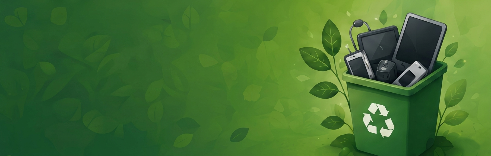
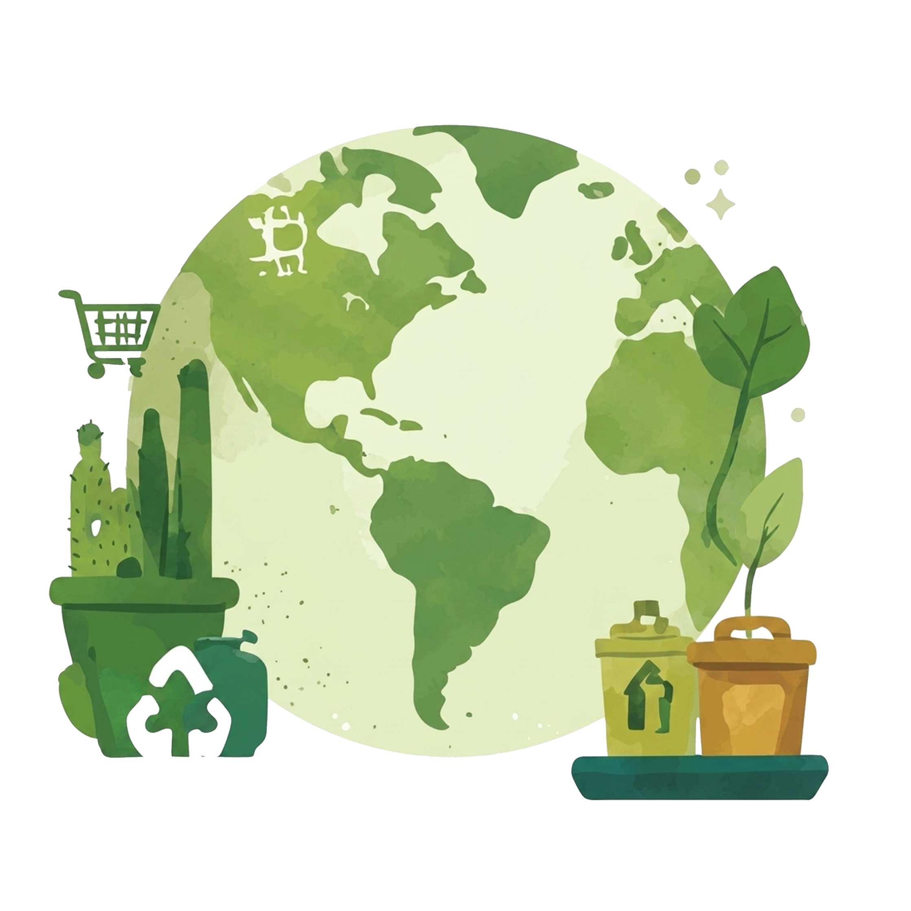
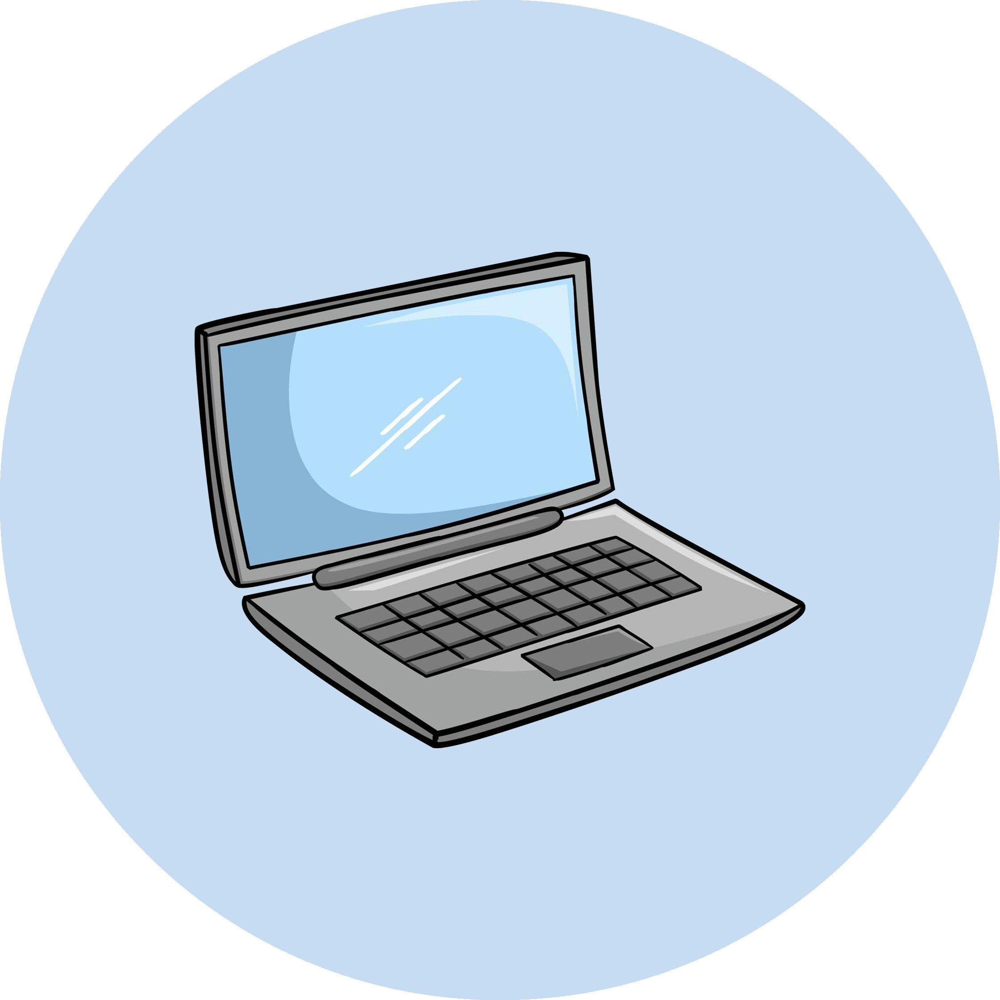
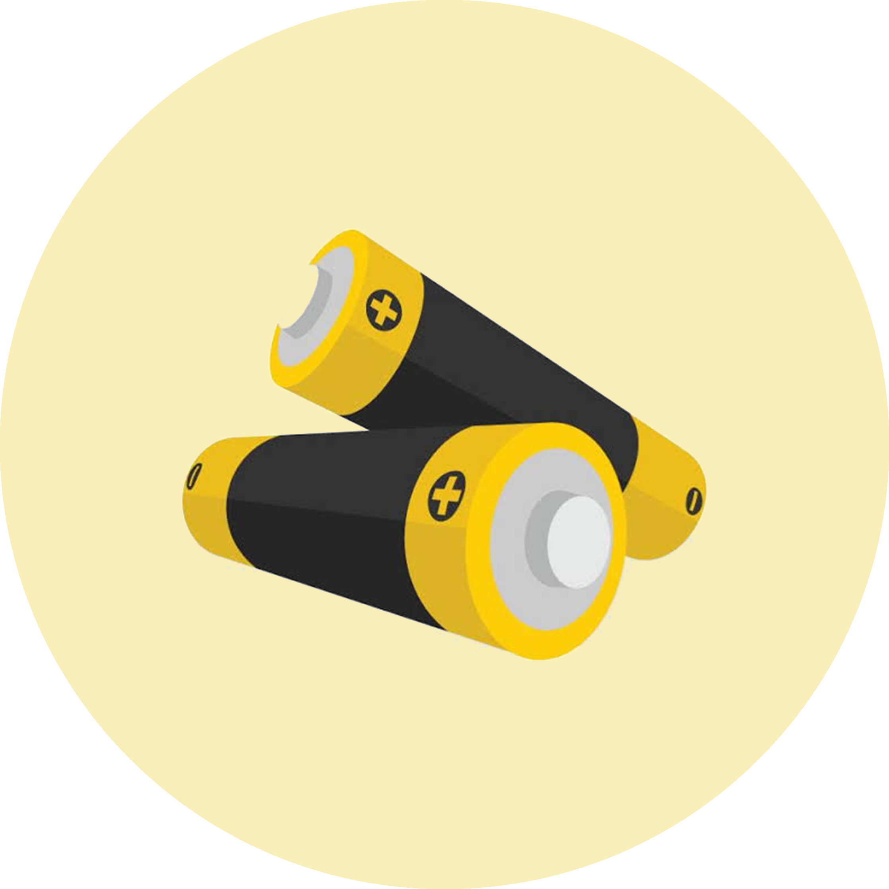
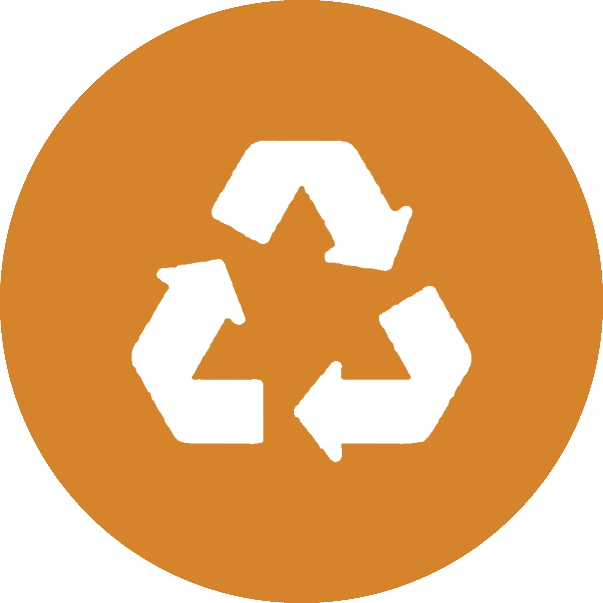
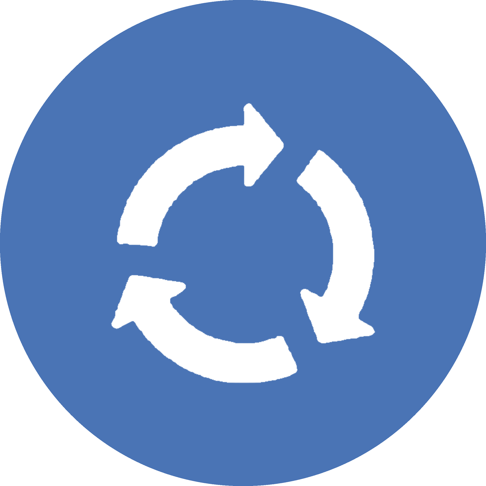

Aprenda a reduzir, reutilizar e descartar corretamente resíduos eletrônicos.

O ODS 12 busca garantir padrões de consumo e produção sustentáveis, reducindo o desperdício, incentivando a eficiência no uso de recursos e promovendo práticas responsáveis em toda a cadeia de produtiva.
No contexto tecnológico, isso envolve utilizar equipamentos de forma consciente, prolongar sua vida útil e encaminhar corretamente os resíduos eletrônicos.



Alguns materiais tecnológicos precisam de atenção especial no descarte.

Devem ser encaminhados para pontos de coleta apropriados.

Peças podem ser reaproveitadas ou recicladas, evitando a poluição.

Devem ser entregues em pontos de coleta especificos.

Podem conter materiais recicláveis e devem ter destinação correta.

Evite trocar equipamentos sem necessidade. Use de forma consciente.

Doe, conserte ou dé uma nova finalidade aos equipamentos.

Separe os resíduos e procure pontos de coleta para que eles sejam reciclados corretamente.